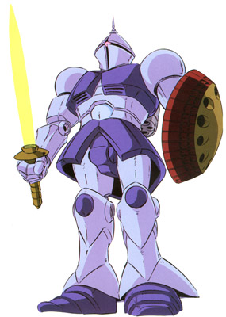

| YMS-15 Gyan High Performance Close Combat Mobile Suit |
|
|  | |
General and Technical Data |
|
|
Model number: YMS-15 Code name: Gyan Unit type: high performance close combat mobile suit Operator: Zeon Duchy Dimensions: head height 19.9 meters Weight: empty 52.7 metric tons; max gross 68.6 metric tons Construction: super-high tensile steel on monocoque frame Powerplant: Minovsky type ultracompact fusion reactor, output rated at 1360 kW Propulsion: rocket thrusters: 56200 kg total Performance: maximum thruster acceleration 0.82 G Equipment and design features: sensors, range 4400 meters Fixed armaments: none Optional hand armaments: beam sword, powered by rechargable energy cap; MMP-80 90mm machinegun, 32 rounds per magazine; shield, mounts 4x missile launcher Magnetic Storage Racks: 5, primary rack on backpack, one secondary rack on either hip. 2 ammunition racks on front hips. Legs can additionally mount 3-tube missile launchers or panzer fausts. |
|
| Technical and Historical Notes | |
|
An experimental mobile suit designed to support the Rick Dom and fight in close combat in a space setting, the YMS-15 Gyan designed by Ma Qube is a powerful competitor against Federation GMs.
Although it cannot arm beam rifles, the Gyan sports one of the most powerful beam swords of the era, and additionally stores small-yield missiles in its shield. It can also arm an MMP-80 machinegun for medium range firepower. The strength of the Gyan however lays in its powerful frame and beam sword, making it deadly in close combat.
The Gyan is designed primarily to be used in tandem with other mobile suits that specialize in ranged combat, such as Rick Doms and Zaku IIs. It is not an all around combatant like the Gelgoog, but rather specializes in close-combat warfare like the Gouf, maximizing efficiency without resorting to the high powered reactors required for beam weapons.
|
| Weapons and Features | |
|
  |
|